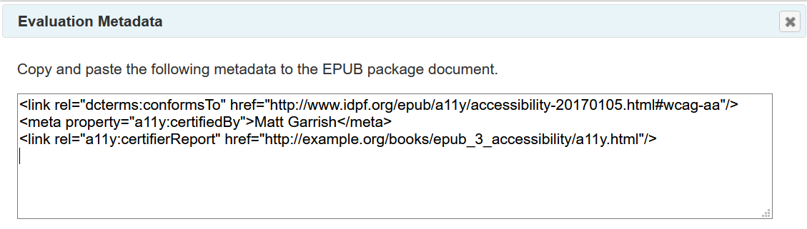

Note
The SMART tool is free for trial use but restricted to two evaluations per month. DAISY Consortium full members and inclusive publishing partners are eligible for unlimited access.
Getting Started
The SMART tool is a Web-based complement to the Ace accessibility checker. It helps guide evaluators through the manual checks necessary to ensure conformance with WCAG and the EPUB accessibility specification.
Topics
Starting an Evaluation
Note
This guide assumes basic knowledge of how to export the
report.json file from Ace.
After logging in to SMART, a new evaluation is started similarly to the Ace tool. Instead of
dragging an EPUB file into the application, however, the report.json file output by
Ace can either be dragged and dropped into the blue box on the page or the link in the box can
be used to select the file to upload.

Note
It is also possible to start a blank evaluation using the link below the box, but it is not advised to assess publications without first running them through Ace. See Limitations for more information.
If the Ace report file loads successfully, an import report dialog will appear.

This dialog indicates how the SMART tool has been optimized for the publication. For example, it lists any tests that have been disabled for media types not found in the publication (e.g., there is no need to list audio checks when there is no audio).
The SMART tool is also able to suggest metadata that should be present. If it does, it will indicate which it has set in this dialog.
After reviewing the import details, the dialog can be dismissed to begin evaluating the publication.
Evaluating a Publication
Publication Information
The Publication Information tab is the default view in the SMART evaluation interface. It allows general information about the publication, such as its title and authors, to be reviewed and modified. This metadata is only used in the final report that the SMART tool generates, however.

One key field to note is the publication format. The SMART tool will automatically set this field to EPUB 3 or 2 based on the Ace report, but the value specified here is also used to determine the type of tagging to generate in later evaluation steps (i.e., for the discovery and result metadata). If the tool outputs the wrong tags, make sure the format has been set correctly.
To generate a report, there are two required metadata fields: the title of the publication and the last modified date. These must be set as they provide critical context for the report.
The Additional Metadata field at the bottom of the form is used to include extra information in the final report. The data input here does not have to conform to a metadata standard. The field takes a human-readable label separated from a value by a colon and space (e.g., "Region: North America").
Note
Due to the translations to make the metadata human-readable in the final reports, the SMART tool does not currently provide the option to generate new metadata tags when modifications are made. The source publication must be manually updated in such cases.
Conformance
The Conformance tab contains all the tests that need to be carried out to verify the publication is accessible. Each test is a self-contained unit with instructions on how to evaluate for conformance and a field to indicate if it passes or fails.

Each test is labelled and identifies the standard it is from. For WCAG success criteria, the conformance level (A or AA) is also provided.
Beneath the label are instructions on how to evaluate the test. It will be necessary to have the publication open in an editing program to check the markup for issues.
Note
The Ace HTML report is also useful to open during a conformance evaluation as it allows the document structure and images to be reviewed.
The instructions provided in the SMART tool aim to cover everything that needs to be checked to pass a test, but this is possible to provide in all cases. Some WCAG criteria require detailed checking of the markup. For these tests, a list of the most common problems is included to look for.
In addition to the guidance provided in the tool, links to additional documentation in this knowledge base, in WCAG supporting documents, and in the EPUB accessibility techniques are also provided. These links are initially hidden but can be viewed by expanding the relevant heading.

The status section is for specifying the result of evaluating the test. Tests are assigned a simple Pass/Fail status based on whether the full criterion was met or not.
When assigning a failing grade, the reason for the failure should be specified in the note field that appears.

If a test is not applicable to a publication, setting the N/A status will collapse the description and links, leaving only a greyed box with the status section.

The SMART tool will automatically set tests to N/A if it determines from the Ace report that they are not likely to apply (e.g., all image, audio and video tests will be set to not applicable if there is only text content).
A general note field is also available for any test, regardless of what status it is assigned. To add a note, click on the checkbox below the status section.

Notes in this field could provide instructions on how to fix any errors, for example, or explain why a test is considered not applicable.
After completing all the applicable conformance tests, the next step is to check the discovery metadata embedded in the publication.
Discovery
The Discovery tab is where the accessibility metadata for the publication is displayed. The tab contains input fields for each of the properties required or recommended by the EPUB Accessibility specification.

Refer to each of the following knowledge base pages for more information on how to complete these fields.
- Accessibility Features — Features of the content that notably improve its accessibility (e.g., MathML markup for better comprehension and navigation of equations).
- Accessibility Hazards — Potential physical hazards the content may present (e.g., seizures from flashing).
- Access Modes — the ways in which information in the publication is perceived or processed (e.g., visually if image-based content is included).
- Sufficient Access Modes — The combinations of access modes by which the information of the publication can be consumed (e.g., a publication with images might be readable in a textual-only manner if the images are described in addition to being readable using both textual processing and visual perception).
- Accessibility Summary — A human-readable summary of the accessibility of the publication.
The SMART tool will auto-populate these fields during the loading of a new evaluation if it determines the values are likely to apply. Make sure to review the values it sets, however, as evaluating the publication may change some fields (e.g., if all images are determined to be presentational, any image-related metadata set would likely no longer apply).
If accessibility metadata is added or modified, the SMART tool can create a new set of tags to use in the publication's package document. Click the Generate button at the bottom of the page to open a dialog with the new markup.

Description
The following EPUB 3 accessiblity metadata tags are depicted in the dialog window:
<meta property="schema:accessibilityFeature">alternativeText</meta>
<meta property="schema:accessibilityFeature">readingOrder</meta>
<meta property="schema:accessibilityFeature">tableOfContents</meta>
<meta property="schema:accessibilitySummary">This EPUB Publication meets the requirements of the EPUB Accessibility specification with conformance to WCAG 2.0 Level AA. The publication is screen reader friendly.</meta>
<meta property="schema:accessibilityHazard">none</meta>
<meta property="schema:accessMode">textual</meta>
<meta property="schema:accessMode">visual</meta>
<meta property="schema:accessModeSufficient">textual,visual</meta>
<meta property="schema:accessModeSufficient">textual</meta>
Distribution
The Distribution tab is similar to the Discovery tab except that it displays ONIX accessibility metadata.
Note
ONIX is a metadata format used to distribute trade publications to vendors for sale. It is not necessary to review this tab unless a publication will be distributed this way.

The distribution metadata fields are like the discovery fields, although there are some
differences between the two standards. When metadata set in the Discovery tab has an
equivalent ONIX property, that field will also automatically be set in the Distribution tab.
For example, the summary input into the Discovery tab is automatically copied to ONIX
00 field.
For more information about ONIX records and expressing accessibility metadata, refer to the ONIX knowledge base page.
Like the discovery metadata, it is also possible to output the distribution metadata in its native format by clicking the Generate button at the bottom of the tab. The ONIX tags are rendered in a new dialog window.

Description
The following ONIX metadata tags are depicted in the dialog window:
<descriptiveDetail>
<productFormFeature>
<productFormFeatureType>09</producFormFeatureType>
<productFormFeatureValue>03</productFormFeatureValue>
</productFormFeature>
<productFormFeature>
<productFormFeatureType>09</producFormFeatureType>
<productFormFeatureValue>11</productFormFeatureValue>
</productFormFeature>
<productFormFeature>
<productFormFeatureType>09</producFormFeatureType>
<productFormFeatureValue>14</productFormFeatureValue>
</productFormFeature>
</descriptiveDetail>Result
The result tab indicates whether the publication successfully meets the requirements of the EPUB Accessibility specification. This field is not editable, as it is automatically updated as an evaluation is carried out.

If any tests are not complete, or any required metadata missing, the result will be "Incomplete". See the section on validating evaluations for more information on how to locate the incomplete sections.
The final two fields are optional and only need to be completed if a final report is being generated. The first, the evaluator, is used to declare the name of the organization or individual who carried out the evaluation. The second, the link to report, is for the URL where the final report will be hosted, if it will be made publicly available.
Similar to the discovery and distribution metadata tabs, a button is provided at the bottom of the tab to create metadata tags that can be pasted back into the package document.
Description
The following three EPUB metadata tags are depicted in the dialog window:
<link rel="dcterms:conformsTo" href="http://www.idpf.org/epub/a11y/accessibility-20170105.html#wcag-aa"/>
<meta property="a11y:certifiedBy">Matt Garrish</meta>
<link rel="a11y:certifierReport" href="http://example.org/books/epub_3_accessibility/a11y.html"/>Validate an Evaluation
The SMART tool includes a validation button in the top-left corner of the interface.

This button can be clicked at any time to have the SMART tool analyze the current evaluation and report any fields that have not been completed.
Any issues found during validation are reported in the message console at the bottom of the SMART interface (this console will automatically appear after validation).

Each message is prefixed by its severity (error or warning) and describes the problem. Clicking on a message loads the location of the problem in the evaluation.
Validation is also automatically performed whenever a preview or final report is created.
Create a Report
After completing and validating an evaluation, the SMART tool provides options for generating an accessibility report in the Reporting tab.

If any notes have been included in the evaluation the radio buttons at the top of the tab allow control over which are output. By default, all notes are included in the report, but the output can be limited to only failure descriptions, only notes, or no notes of any kind.
A preview of the report can be created by clicking on the Preview button. If no validation issues are detected, the generated report will open in a new browser window.

If the SMART tool finds validation issues, a prompt will appear to cancel the preview and view the issues or to continue with the preview.
If there are no issues that need fixing in the preview, the next step is to generate a downloadable version of the report. Click the Create button and a browser prompt to save the report file will appear (some browsers may automatically download the file without prompting depending on the current settings).
Save an Evaluation
As it is not always possible to complete an evaluation in one sitting, the SMART tool provides the option to save and resume an evaluation later. Clicking on the Save button in the upper-left corner of the application opens a dialog asking where to save the evaluation.

There are two options for saving evaluations:
- To the SMART server — the evaluation is saved to a database on the SMART site. This option provides the greatest convenience, as evaluations can be reloaded later with only a click of a button.
- To the local file system — a downloadable file is created with the data necessary to reload the evaluation. If this file is lost, the evaluation will have to be restarted.
Evaluations can be saved as often as desired but must be saved at least once to resume later. The SMART tool does not save evaluations by default, so if the data is not saved, the evaluation cannot be reloaded from the history.
Reload an Evaluation
Saved evaluations are reloaded from the Evaluation History section on the main page of the application. This section is located below the drag-and-drop box used to start new evaluations.

Each row in the evaluation history table represents one saved evaluation. There are columns for the name of the publication, when the evaluation was started, when it was last saved, its current status, as well as a set of buttons for maintaining the evaluation.
The status column provides information about where the evaluation is saved. It will contain one of the following three values:
- Saved — the evaluation is saved on the SMART server. Clicking the resume button will load the evaluation.
- Saved Locally — the evaluation was saved to a local computer. Selecting the resume button will require locating the saved data file.
- Not Saved — the evaluation was exited without saving the data. These records are only for informational purposes, as there is no way to resume the evaluation.
Evaluations that have been saved locally can also be resumed by dragging and dropping the JSON evaluation file (not the Ace report) into the drag-and drop area used to start an evaluation. The SMART application can differentiate the data files and will automatically load the evaluation if it matches a record in the history.
Delete an Evaluation
Any evaluation can be deleted by clicking the delete button associated with it in the evaluation history.
If an evaluation was stored on the SMART server, deleting the file permanently deletes all record of it. If an evaluation was stored on the local file system, the data file will also need to be deleted.
If an evaluation is accidentally deleted and the data is saved locally, the evaluation can still be retrieved. Start the evaluation over using the Ace report file and then save the data locally again, but do not overwrite the existing saved data. The original evaluation data can now be reloaded from the evaluation history.
There is no way to retrieve the deleted data when an evaluation was stored on the SMART server.
Limitations
The SMART tool has two primary limitations:
- Humans are not as reliable at finding markup errors as machines.
- WCAG is a complex standard to fully evaluate, and human interpretation is subjective.
The first problem can be mitigated by ensuring both EPUBCheck and Ace are always run first.
The latter problem poses more of a challenge. The SMART tool tries to mitigate this issue by identifying what to look for and providing reports that explain what the evaluator found. Regardless, it is possible for two evaluators to assess a publication differently.
Therefore, while the SMART tool is intended to be used by anyone to improve the accessibility of their publications, it should not be used to certify content as accessible except by persons familiar with WCAG and evaluating its success criteria.
Related Links
- Ace SMART
- Ace SMART — User Guide